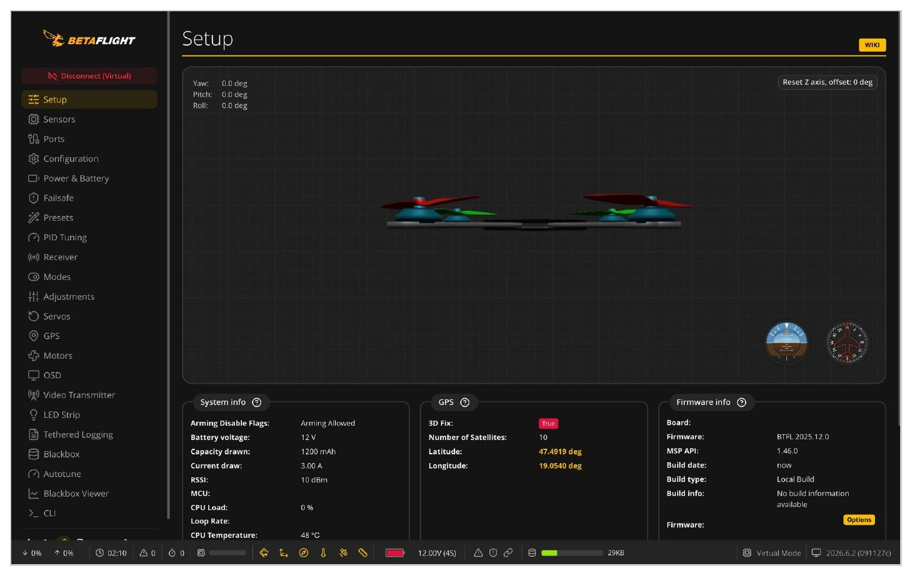
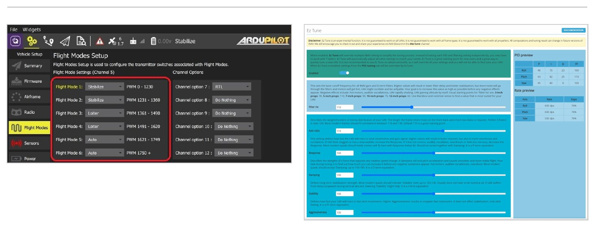
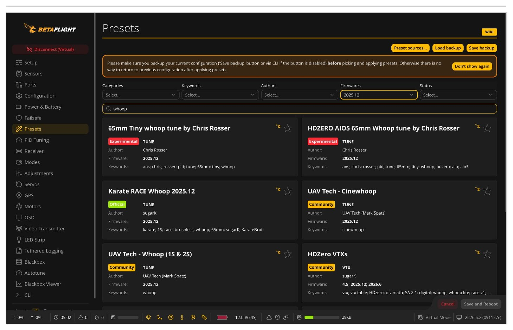
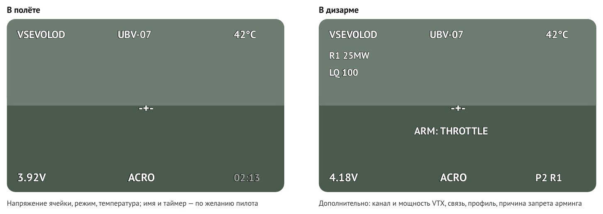
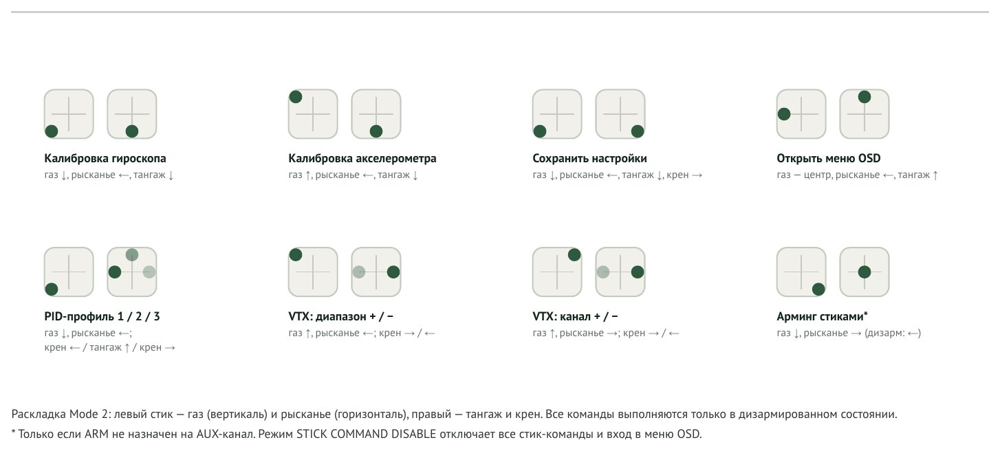
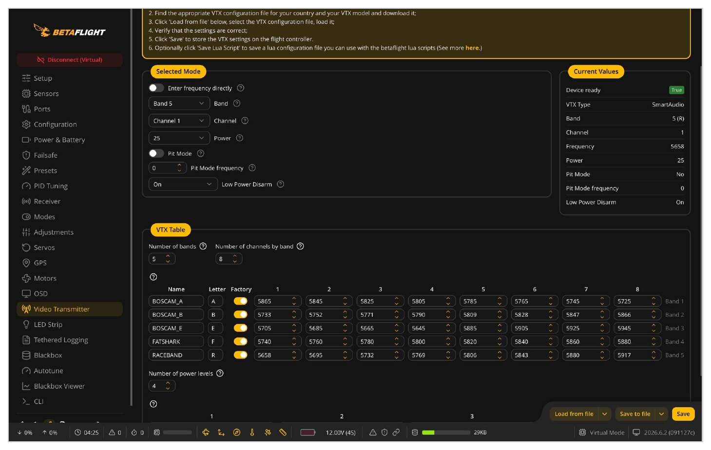
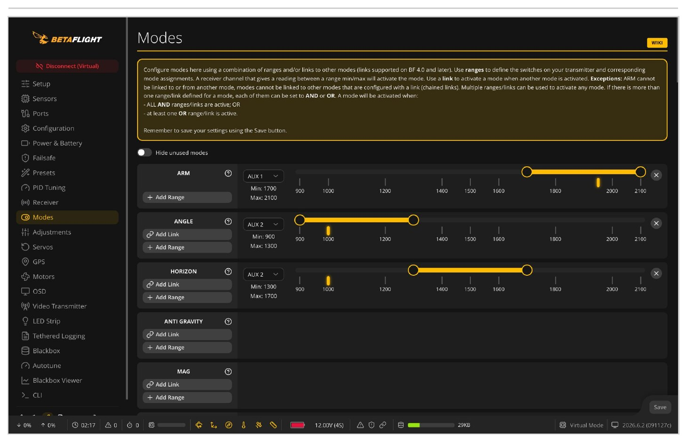
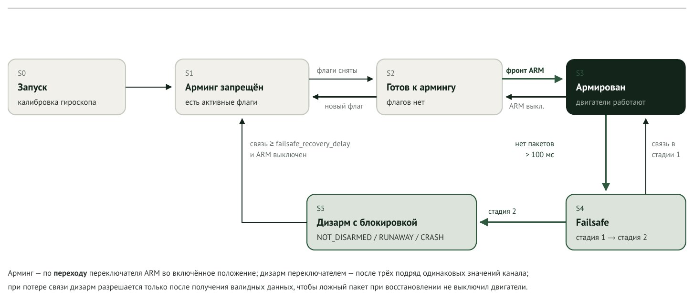
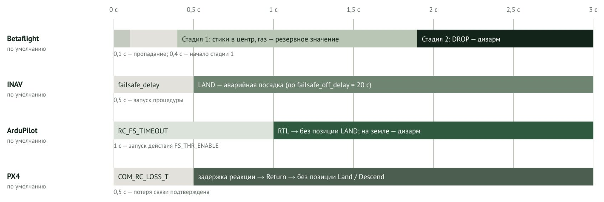

АННОТАЦИЯ
Справка отвечает на 94 вопроса, которые ГК «Геоскан» подготовила для функциональных требований к автопилоту квадрокоптера класса tinywhoop. Ответы основаны на моём опыте гонок и настройки аппаратов; для каждого вопроса я показываю, как он решён в ArduPilot, PX4, Betaflight и INAV.
Все ответы даны для личного зачёта: один пилот, один аппарат. Командный зачёт с несколькими дронами и пилотами устроен сложнее; разумно сначала сделать прошивку для личного зачёта, а затем расширять её.
Сведения о прошивках актуальны для ArduCopter 4.7.1, PX4 1.17.0, Betaflight 2026.6.2 и INAV 9.1 на 01.10.2026.
| Обозначение | UBV-AS-2026-01, редакция 2.0 от 03.10.2026 |
| Автор | Всеволод, UbVProject, Санкт-Петербург |
| Основание | Перечень вопросов «ФТ Тинивуп» (7 блоков, 94 вопроса), ГК «Геоскан» |
Как читать
Разделы 3–9 повторяют блоки перечня; каждый вопрос обозначен кодом вида Б3.7 (блок и номер). В таблицах: есть штатно, есть частично, нет. Моноширинным шрифтом даны имена параметров, например failsafe_delay (Betaflight, INAV) или RC_FS_TIMEOUT (ArduPilot).
Сокращения
AIO | плата «всё в одном»: полётный контроллер, регуляторы, приёмник, видеопередатчик |
CLI | текстовая консоль настройки Betaflight и INAV |
ELRS | ExpressLRS, открытая система радиоуправления |
IMU | блок инерциальных датчиков: гироскоп и акселерометр |
LQ | доля принятых пакетов радиоканала, % |
OSD | наложение данных на видеоизображение |
VTX / VRX | видеопередатчик / видеоприёмник 5,8 ГГц |
Арминг | перевод двигателей в рабочее состояние; дизарм — обратный переход |
Failsafe | поведение при потере управляющего сигнала |
«Черепаха» | переворот аппарата реверсом двигателей после падения |
1. ВВЕДЕНИЕ
Tinywhoop — квадрокоптер с диагональю 65–75 мм, винтами в кольцевых защитах и аккумулятором 1S. На таких аппаратах проводят гонки в помещении и учебные занятия: они лёгкие, безопасные и переносят удары. Почти всё, с чем пилот сталкивается в работе с аппаратом, определяет прошивка: настройка, данные в очках, поведение при разряде и потере связи.
1.1 Цель и рамки
Цель справки — ответить на вопросы заказчика так, чтобы ответы можно было перенести в функциональные требования. Я исхожу из практики гонок в личном зачёте; командный зачёт, групповые занятия и связанные с ними задачи (распределение каналов, взаимодействие аппаратов) — отдельная тема для следующего этапа.
Опорой служат четыре открытые прошивки: ArduPilot и PX4 (универсальные автопилоты с наземной станцией) и Betaflight и INAV (прошивки для ручного FPV-пилотирования). Эталонные платформы — BETAFPV Air75 II и Meteor75 Pro с заводским Betaflight.
1.2 Что не вошло
Автопилот заказчика я не оцениваю1. Там, где вопрос касается продукта (комплектация пульта, состав платы), я описываю, как это устроено у существующих аппаратов и чего ждут пилоты.
2. ОБЪЕКТЫ СРАВНЕНИЯ
Прошивки относятся к двум линиям развития. ArduPilot и PX4 создавались как универсальные автопилоты с навигацией, миссиями и наземной станцией на протоколе MAVLink. Betaflight и INAV происходят от MultiWii и Cleanflight, ориентированы на ручное пилотирование и настраиваются через конфигуратор по протоколу MSP.
2.1 Общие сведения
| ArduPilot | PX4 | Betaflight | INAV | |
|---|---|---|---|---|
| Выпуск | ArduCopter 4.7.1 (08.2026) | v1.17.0 | 2026.6.2 | 9.1 |
| Начало | 2009 | 2012, ETH Zürich | 2015, ответвление Cleanflight | 2016, ответвление Cleanflight |
| Лицензия | GPL v3 | BSD 3-Clause | GPL v3 | GPL v3 |
| Исполнение | C++, ChibiOS | C++, NuttX, шина uORB | C, без ОС | C, без ОС |
| Наземное ПО | QGroundControl | QGroundControl | Betaflight App (браузер) | INAV Configurator |
| Вычислитель | STM32 F4 (≥1 МБ, сокращённые сборки), F7, H7 | STM32 F7, H7 | STM32 F4, F7, G4, H7; AT32F435 | STM32 F405, F7, H7; AT32F435 |
| Типы аппаратов | Мультикоптеры, вертолёты, самолёты, VTOL, наземные и водные | Мультикоптеры, самолёты, VTOL, наземные | Мультикоптеры; крылья с 2025.12 | Самолёты, мультикоптеры, VTOL |
2.2 Области применения
Таблица отражает сложившуюся практику и наличие штатных функций, а не принципиальные ограничения: код любой из прошивок открыт и может быть доработан.
| Задача | AP | PX4 | BF | INAV |
|---|---|---|---|---|
| FPV-гонки, фристайл | ||||
| Tinywhoop, полёты в помещении | ||||
| Дальние FPV-полёты с возвратом | ||||
| Полёт по точкам | ||||
| Аэросъёмка, промышленные задачи | ||||
| Исследования, ROS 2 | ||||
| Самолёты, VTOL | ||||
| Обучение FPV-пилотированию | ||||
| Обучение программированию автономии |
Betaflight: полёт по точкам с 2026.6 (режим AUTOPILOT), крылья с 2025.12.
2.3 Аппаратная совместимость
Для класса tinywhoop определяющим оказывается вычислитель AIO-платы. Платы массой 3–5 г строятся на микроконтроллерах с 512 КБ – 1 МБ флеш-памяти, тогда как ArduPilot требует не менее 1 МБ (полный набор функций — 2 МБ), а PX4 рассчитан на F7/H7.
| МК | Флеш | Типичное применение | AP | PX4 | BF | INAV |
| STM32F411 | 512 КБ | Бюджетные 1–2S AIO | ||||
| STM32G473 | 512 КБ | Matrix 1S (эталонные платформы) | ||||
| STM32F722 | 512 КБ | Стеки 20×20, 30×30 | ||||
| STM32F405 | 1 МБ | 2–4S AIO, стеки | ||||
| AT32F435 | 1–4 МБ | Новые AIO и стеки | ||||
| STM32F7xx, H7xx | 1–2 МБ | Стеки, Pixhawk |
INAV не поддерживает F411 официально с версии 8.0; поддержка G4 не планируется.
На эталонных платформах из четырёх прошивок работает только Betaflight. Для остальных нужны AIO-платы на F405, F7, H7 или AT32F435, поэтому дальше их решения я привожу как ориентир, а не как готовый вариант.
2.4 Эталонные платформы
| Параметр | Air75 II | Meteor75 Pro |
|---|---|---|
| Масса (по данным производителя) | 20,2–21,3 г | ≈30,5 г |
| Двигатели, винты | 0802, 22 000–28 000 KV; GF 1614 | 1102, 22 000 KV |
| Плата | Matrix 1S 5IN1 II: STM32G473, ICM-42688-P, ESC 12 А, флеш 16 МБ | Matrix 1S: STM32G473 |
| Цель Betaflight | BETAFPVG473 (ревизии _V2, _V3): OSD AT7456E, SmartAudio, CRSF, выводы светодиодной ленты и зуммера, два статусных светодиода | |
| Радио, видео | ExpressLRS 2,4 ГГц (UART); аналоговый VTX 5,8 ГГц, 48 каналов, 25–400 мВт | |
| Прошивка | Betaflight 4.5.x с заводскими значениями BETAFPV; совместима с 2025.12 и 2026.6 |
2.5 Средства настройки
ArduPilot и PX4 рассматриваются через QGroundControl, общую для обоих проектов наземную станцию: мастера типовых операций и полный список параметров (более тысячи). Betaflight с 2025.12 распространяет конфигуратор как веб-приложение Betaflight App; INAV использует настольный INAV Configurator. В обоих случаях настройка разбита на тематические вкладки, параметров несколько сотен, полный доступ даёт CLI. Резервной копией служат файл параметров (ArduPilot, PX4) или текстовый вывод diff all (Betaflight, INAV).


3. БЛОК 1. ПАРАМЕТРЫ АВТОПИЛОТА
Б1.1Какие параметры пользователи tinywhoop фактически изменяют?
Перед каждым вылетом меняется только канал видео, и это умеет каждый пилот. Перед первым взлётом и после ремонта настраивают порты UART (если плата не AIO), имя пилота и название борта, угол наклона камеры, максимальный угол арминга, карту каналов пульта и назначение режимов на переключатели (арминг, Angle, Horizon и т. д.). Rate-профиль меняют не все: кто-то под свой стиль, кто-то под трассу. PID, регуляторы, параметры аккумулятора и VTX-таблицу большинство пилотов настроить не умеют и летают на заводских значениях. Остальные параметры в гонках почти не трогают.
| Параметр | Имя в Betaflight | Когда меняется | Кто меняет |
|---|---|---|---|
| Канал видео | vtx_band, vtx_channel | Перед каждым вылетом | Любой пилот, чаще с пульта |
| Rate-профиль | rate-профили 1–4 | Под стиль или трассу | Опытный пилот |
| Имя пилота, название борта | pilot_name, craft_name | Один раз | Пилот |
| Угол камеры | fpv_mix_degrees | Один раз | Пилот |
| Максимальный угол арминга | small_angle | Один раз | Пилот |
| Карта каналов, режимы на переключателях | map, вкладка Modes | Один раз, при смене пульта | Пилот |
| Порты UART | вкладка Ports | После ремонта (не AIO) | Пилот, сервис |
| PID, регуляторы, АКБ, VTX-таблица | PID Tuning, Motors, Power, Video Transmitter | При смене железа | Завод, опытный пилот |
Б1.2Какие задачи пользователь решает изменением каждого параметра?
Канал видео пилот выбирает, чтобы не пересекаться с другими участниками; чаще всего делает это с пульта. Имя пилота и название борта нужны для идентификации по OSD: по записи видно, кто летел. Угол камеры и максимальный угол арминга — условности некоторых прошивок, без которых аппарат летает, но для стабильной работы в гонке их выставляют. Карту каналов приходится настраивать, потому что единого стандарта нет: обычно подходит AETR1234, но иногда приходится разбираться. Режимы на переключателях пилот назначает под свою привычку: у каждого свои тумблеры и кнопки, и все борта он настраивает одинаково. PID, регуляторы, аккумулятор и VTX-таблицу трогают только после смены железа или если считают заводскую настройку плохой.
Б1.3Какие параметры изменяются регулярно, а какие только при первоначальной настройке?
См. Б1.1: регулярно меняется только канал видео, иногда rate-профиль; всё остальное настраивается один раз.
Б1.4Для каких параметров нужны произвольные значения, а для каких достаточно готовых профилей?
Произвольные значения пользователю почти нигде не нужны. Идеально настроенный с завода аппарат выглядит так: пилот один раз задаёт идентификацию (имя, борт) и свои режимы на переключателях, а перед каждым вылетом ему нужен быстрый доступ к смене канала — из OSD-меню или с пульта.
Б1.5Какие параметры должны быть доступны новичку, а какие опытному пользователю или сервисному специалисту?
Разделения на новичка, преподавателя, профи и завод нет ни в одной из рассмотренных прошивок: Betaflight App лишь скрывает часть вкладок в режиме Expert Mode, ArduPilot помечает параметры как Standard и Advanced. Если вводить уровни, ограничивать нужно только новичка. Неверными PID или настройкой регуляторов он может сжечь железо, неверной настройкой VTX — включить полную мощность: тогда его не допустят к вылетам или сгорит видеопередатчик.
Б1.6Какие параметры являются самыми приоритетными для первой версии прошивки?
Ненужных параметров в дроне нет. Если не строить бизнес на настройке аппаратов за пользователя, все параметры должны быть ему доступны; нельзя выкинуть какой-то параметр и считать, что так сойдёт. Минимальный обязательный набор — параметры из Б1.1.
Б1.7Какие функции есть в Betaflight и заводских конфигурациях Air75 II и Meteor75 Pro, но отсутствуют в вашем автопилоте?
Что есть в автопилоте заказчика, я не знаю. Ниже — функции, которые пилот получает на эталонных платформах; по этой таблице можно сверить свою систему.
| Группа | Заводской Betaflight 4.5.x | Добавлено в 2025.12 и 2026.6 |
|---|---|---|
| Управление | Acro, Angle, Horizon, Air mode, «черепаха», Acro Trainer, Launch Control, Headfree; 4 PID- и 4 rate-профиля | Удержание высоты и позиции (при наличии датчиков), полётные планы |
| Силовая часть | Двунаправленный DShot, RPM-фильтр, динамический режекторный фильтр, ограничение газа, компенсация просадки | Новый алгоритм feedforward |
| Настройка | Конфигуратор, CLI, пресеты, ползунки PID, OSD-меню, Lua-скрипты для пульта, стик-команды | Веб-приложение Betaflight App |
| Видео и OSD | OSD, 3 профиля OSD, статистика после полёта, VTX-таблицы, SmartAudio, пит-режим, низкая мощность до арминга | Пользовательский текст в OSD |
| Радиоканал | ExpressLRS (CRSF), телеметрия, LQ и RSSI в OSD, двухстадийный failsafe | — |
| Безопасность | Флаги запрета арминга с выводом причины в OSD, защита от «убегания», PREARM, звуковой маяк | 30 флагов, автоостановка после переворота |
| Индикация, журнал | Светодиодная лента, статусные светодиоды, звуковые коды; blackbox 16 МБ | Регулировка яркости ленты |
Б1.8Нужны ли отдельные пресеты: учебный, базовый, гоночный и пользовательский?
Пресеты уже используются, хотя и нечасто. На основе профилей удобно сделать разделение по уровню пилота: ограничить газ и угол, включить Acro Trainer. В Betaflight ограничение газа хранится в rate-профиле, а предельный угол и Acro Trainer — в PID-профиле, поэтому пресет уровня собирается из пары профилей.
| Пресет | Rate-профиль: скорости и газ | PID-профиль: угол и тренажёр |
|---|---|---|
| Учебный | Низкие скорости, газ 50–60 % | Angle, малый предельный угол; Acro Trainer |
| Базовый | Средние скорости, газ 70–80 % | Angle и Horizon |
| Гоночный | Высокие скорости, газ 100 % | Acro |
| Пользовательский | Значения пилота | Значения пилота |
Б1.9Нужны ли отдельные пресеты для разных пилотов на одном коптере?
Здесь бывает две ситуации. Если на одном аппарате учатся несколько человек, проблем нет: все привыкают к одному дрону. Если это аппарат секции, каждый пилот почти полностью перенастраивает его под себя (параметры из Б1.4), и это создаёт трудности. Ни одна прошивка не хранит «профиль пилота» целиком: в Betaflight можно разве что назвать rate-профили по именам, а их всего четыре.
Б1.10Где должен изменяться каждый параметр: на компьютере, через OSD, через пульт или переключателем профиля?
См. Б1.4 и Б2.10: канал видео, мощность, бинд-фраза и rate-профиль — без компьютера (пульт или OSD-меню), всё остальное — с компьютера.
Б1.11Можно ли изменять параметр в полёте или только при выключенных двигателях?
В полёте менять параметры нельзя, и добавлять такую возможность не стоит. Когда моторы заармлены, пилот должен думать о полёте, а не о параметрах, иначе дрон во что-нибудь влетит. Не нужно прививать вредную привычку: с ней пилоты потом переходят на большие аппараты. Для сравнения: Betaflight и INAV разрешают в полёте только заранее назначенные функции Adjustments, ArduPilot и PX4 — изменение любого параметра по MAVLink.
Б1.12Что произойдёт при ошибочном значении и как вернуться к рабочей или заводской конфигурации?
Ошибочное значение иногда приводит к тяжёлым последствиям для аппарата. Существующие прошивки слепо доверяют пилоту: проверяется только допустимый диапазон, а о том, что значение неправильное по смыслу, они почти не сообщают. Откатываются через сохранённые резервные копии (в Betaflight — текст diff all, в ArduPilot и PX4 — файл параметров) или с помощью более опытного человека. Команда defaults в Betaflight возвращает значения производителя платы, а не конкретного аппарата: назначения переключателей, VTX-таблица и OSD при этом теряются. Сбросить настройки без компьютера нельзя ни в одной прошивке.

4. БЛОК 2. OSD И ЭКРАННОЕ МЕНЮ
Б2.1Какие данные должны отображаться постоянно?
Многое зависит от предпочтений пилота. Необходимы среднее напряжение ячейки (для 1S можно не среднее), режим полёта и температура платы (её можно заменить предупреждением, но я предпочитаю контролировать её сам). Имя пилота и борта — если пилот захочет. Иногда на экран выводят положение стиков, чтобы тренер мог сопоставить движения с полётом. RSSI, мощность и канал VTX можно выводить, но я бы показывал их только в дизарме: в полёте они отвлекают, а на гонках не так важны. Остальное в гонках почти не используют.

| Элемент | ArduPilot | PX4 | Betaflight | INAV |
|---|---|---|---|---|
| Напряжение ячейки (среднее) | ||||
| Режим полёта | ||||
| Температура платы / ESC | ||||
| Имя пилота и борта | ||||
| Положение стиков | ||||
| Канал и мощность VTX | ||||
| Элементы «только в дизарме» |
«Частично» в последней строке: показ элементов только до арминга штатно не предусмотрен, его можно имитировать отдельным профилем OSD на переключателе.
Б2.2Нужно ли выводить напряжение аккумулятора и среднее напряжение одной ячейки?
Одновременно — нет, одно из двух — обязательно. Под газом напряжение проседает, и предупреждение о разряде срабатывает, хотя летать ещё можно. Прошивки решают это задержкой срабатывания предупреждения (Betaflight, ArduPilot) или расчётом напряжения без просадки (INAV, PX4).
Б2.3Нужно ли выводить время полёта, положение газа, режим полёта и активный пресет?
Время полёта — по желанию пилота. Положение газа на практике не нужно: после 10 часов налёта газ чувствуется и так, а до этого индикатор не помогает. Режим полёта нужен, но у многих стоит только Acro, и для них это лишний шум. Активный пресет показывать нужно, но без отдельного элемента: его можно привязать к имени пилота или борта или показывать до арминга. Betaflight выводит номер профиля отдельным элементом.
Б2.4Какие показатели радиосвязи должны выводиться?
Это зависит от пилота. Гонки проходят почти при идеальной связи, поэтому её многие не отслеживают: потерю пакетов видно по шуму картинки. Параметр необязательный; если выводить, то LQ (долю принятых пакетов) — он нагляднее RSSI.
Б2.5Нужно ли постоянно показывать диапазон, канал, частоту и мощность видеопередатчика?
До арминга — да, после — по желанию. Нередко пилот уверен, что стоит на одном канале, а фактически стоит на соседнем, шумит другому и не понимает этого. Мощность видеопередатчика ограничена регламентом соревнований, и о ней часто забывают, поэтому лишняя проверка не помешает. Показывать постоянно, думаю, не нужно.
Б2.6Какие предупреждения обязательны?
Строго обязательных нет. Нужны три: перегрев, плохая связь (и на приёме у дрона, и по телеметрии на пульте) и низкое напряжение. Остальные не важны.
Б2.7Как должна отображаться причина запрета арминга?
Причин немного: неправильный режим, дрон не на земле или неполадка в железе. Я бы разделил причины на две группы: те, что можно устранить сразу, и те, что нельзя. В Betaflight 30 флагов запрета; ниже они сгруппированы именно так.
| Группа | Флаги | Что делает пилот |
|---|---|---|
| Устранить сразу: положение органов управления | THROTTLE, ARM_SWITCH, NOT_DISARMED, NOPREARM, BOXFAILSAFE, FLIP_SWITCH, ALT_HOLD_SW, POS_HOLD_SW, AUTOPILOT_SW, RESCUE_SW | Убрать газ, переключить тумблеры |
| Устранить сразу: положение аппарата | ANGLE, RUNAWAY, CRASH | Поставить ровно, дизармить и армить заново |
| Подождать или откалибровать | BOOTGRACE, CALIB, GPS, NO_ACC_CAL | Дождаться окончания; откалибровать акселерометр стиками |
| Связь и интерфейсы | RXLOSS, FAILSAFE, CLI, CMS, MSP, BST | Включить пульт, закрыть меню или конфигуратор |
| Нельзя устранить на месте | NOGYRO, LOAD, DSHOT_TELEM, DSHOT_BBANG, MOTOR_PROTO, REBOOT_REQD, PARALYZE | Перезагрузка, компьютер или ремонт |
Б2.8Какие предупреждения нужны при низком заряде, ухудшении связи, ошибке датчиков, перегреве и срабатывании аварийного режима?
Низкий заряд — два уровня, предупреждающий и критический, с задержкой срабатывания, чтобы не реагировать на просадку под газом (Б7.10). Ухудшение связи — по падению LQ ниже порога, потеря связи — отдельное мигающее сообщение. Ошибка датчиков — до полёта через запрет арминга (Б2.7), в полёте сообщение о критической ошибке перед дизармом (Б7.14). Перегрев — по температуре процессора и регуляторов с настраиваемым порогом. Аварийный режим — постоянная надпись на весь период failsafe. Все эти предупреждения есть в Betaflight и INAV, причём каждое включается отдельно.
Б2.9Нужна ли послеполётная статистика и какие показатели в неё входят?
Нужна, и не только после полёта, но и до него — то есть всегда, когда аппарат не армирован. Показатели: минимальное и максимальное напряжение, израсходованная ёмкость, время полёта, минимальная и максимальная температура. Betaflight показывает статистику после дизарма (до 31 показателя на выбор), включая минимальное и конечное напряжение, мА·ч, таймеры и максимальную температуру регуляторов; экрана статистики до полёта и минимальной температуры в нём нет.
Б2.10Какие настройки разрешено менять без компьютера?
Канал и мощность видеопередатчика, бинд-фразу и rate-профиль; остальное можно и с компьютера. Если бы без компьютера переключались пресеты целиком, это было бы чудо. В Betaflight канал, мощность и профиль меняются из OSD-меню или Lua-скриптом на пульте; бинд-фраза задаётся только в приёмнике ExpressLRS (через Wi-Fi или с передатчика).
Б2.11Какие настройки доступны только при выключенных двигателях?
Все. Повторю: при включённых моторах в настройки не заходим. В Betaflight и INAV это так и сделано: в меню нельзя войти армированным, а открытое меню запрещает арминг.
Б2.12Нужны ли подтверждение опасных изменений и защита настроек от учеников?
Да. Многие пилоты не понимают, что меняют, и опираются на опыт, которого у них нет, или на ответы ИИ. Защита необходима. Сейчас в прошивках её почти нет: в Betaflight есть только режим STICK COMMAND DISABLE, блокирующий меню и стик-команды переключателем.
Б2.13Делаем ли управление экранным меню стиками?
Многие им вообще не пользуются: все нужные настройки сейчас меняются с пульта через Lua-скрипты ExpressLRS. Но некоторые пилоты пользуются меню активно. Стартовать можно без него, но добавить нужно.
Б2.14Нужны ли отдельные жесты стиками для быстрых команд вне экранного меню?
Нужны, но надо продумать, как они соотносятся с обычным управлением, и работать они должны только в дизарме. Набор Betaflight показан на рисунке.

rc_controls.c и cms.c)Б2.15Можно ли восстановить заводской профиль через OSD?
Ни одна из рассмотренных прошивок этого не умеет: сброс выполняется только с компьютера. Функция полезна, если сброс возвращает заводской профиль конкретного борта (с назначениями переключателей и VTX-таблицей), а не голые значения по умолчанию. С учётом Б2.12 её стоит делать только в дизарме и с явным подтверждением.
5. БЛОК 3. ВИДЕОКАНАЛ
Б3.1Какие параметры видеопередатчика должен изменять пользователь?
См. Б1.1 и Б2.10: канал (диапазон и номер) и мощность в пределах регламента. Режим минимальной мощности — Б3.6. Точная частота пилоту не нужна, достаточно каналов из таблицы.
Б3.2Какие параметры задаются на заводе, а какие меняются перед каждым занятием или соревнованием?
На заводе задаются протокол связи с видеопередатчиком, VTX-таблица (разрешённые каналы и уровни мощности), режим минимальной мощности до арминга и начальные значения. Перед каждым вылетом меняется только канал, иногда мощность, если регламент соревнований требует другую.

Б3.3Как пользователь меняет настройки: через OSD и стики, пульт, кнопку, мобильное приложение или компьютер?
Сейчас чаще всего с пульта: модуль ExpressLRS передаёт полётному контроллеру канал, мощность и пит-режим из настроек модели (VTX Administrator). Реже — из OSD-меню или с компьютера. Кнопки на бортовых видеопередатчиках AIO-плат обычно нет. Настраивать всё с телефона было бы удобно: сейчас это возможно только через сторонние приложения и Bluetooth-модуль, массовым такой способ не стал.
| Способ | ArduPilot | PX4 | Betaflight | INAV |
|---|---|---|---|---|
| Компьютер | ||||
| Пульт (ELRS VTX Administrator) | ||||
| OSD-меню | ||||
| Стик-команды | ||||
| Телефон (Bluetooth) |
Б3.4Нужен ли QR-код для отображения или передачи настроек?
Нет, точно нет.
Б3.5Должна ли текущая настройка видеопередатчика отображаться в OSD и системной индикации?
См. Б2.5: в OSD — до арминга. В системной индикации не нужна (Б5.3).
Б3.6Нужен ли режим минимальной мощности до арминга?
Да, необходим. Между включением и стартом иногда проходит много времени, и греть плату впустую не стоит: она сгорит. В Betaflight и INAV это параметр vtx_low_power_disarm, в ArduPilot — VTX_OPTIONS; в PX4 такого режима нет.
Б3.7Должна ли рабочая мощность автоматически включаться после арминга?
Для гонок — да. Так работает vtx_low_power_disarm = ON: минимальная мощность в дизарме, рабочая после арминга.
Б3.8Какие частоты и уровни мощности должны быть заблокированы?
Для гонок достаточно диапазона Raceband (R1–R8), но можно оставить и больше. Блокировать нужно в соответствии с местным законодательством. В Betaflight это делается VTX-таблицей: в неё вносят только разрешённые частоты и мощности.
Б3.9Как быстро назначить разные каналы группе из 10–20 коптеров?
Сейчас никак, только вручную. В гонке одновременно летят максимум четыре аппарата, и у каждого пилота свой. Групповое взаимодействие — интересная тема, но отдельная.
Б3.10Как увидеть назначенный канал до надевания очков?
С пульта. Хотя чаще всего видеть канал до очков не нужно, и я не могу представить, когда эта функция пригодится. Для справки: Betaflight умеет окрашивать светодиодную ленту в цвет, соответствующий каналу.
Б3.11Как предотвратить включение нового коптера на уже занятом канале?
Никак: для этого на каждый борт пришлось бы ставить видеоприёмник или другой способ приёма информации. На практике такой проблемы нет, её решают регламент и спортивная этика.
Б3.12Нужны ли групповое распределение каналов, импорт плана или пакетная настройка?
Нет, точно нет.
6. БЛОК 4. ПУЛЬТ, ПРИЁМНИК И КАНАЛЫ
Б4.1Какой пульт будет входить в комплект и какие его функции уже определены?
У пилотов почти всегда свой пульт: чаще Radiomaster, реже Jumper, остальные почти не встречаются. Привязываться к конкретной модели пульта, как и продавать пульт с каждым дроном, неразумно. Функции пульта — все функции EdgeTX: больше не нужно, меньше нельзя. Прошивки к пульту тоже не привязаны: все четыре принимают ExpressLRS (CRSF) и другие стандартные протоколы.
Б4.2Как выполняется привязка пульта к коптеру?
Бинд-фразой ExpressLRS: приёмник и передатчик с одинаковой фразой соединяются автоматически. Этот механизм одинаков для всех прошивок, полётный контроллер в нём почти не участвует.
Б4.3Нужны ли кнопка, последовательность включений, OSD, компьютер или идентификатор для привязки?
Сейчас бинд-фраза вводится в Wi-Fi-настройках приёмника и передатчика. Было бы удобно задавать её с компьютера в конфигураторе. В Betaflight это возможно только для приёмников ExpressLRS, встроенных в процессор платы (SPI); для обычных приёмников по UART — только через собственный интерфейс ExpressLRS. Альтернативы — классическая привязка тройным включением питания или кнопкой.
Б4.4Как исключить случайную привязку к соседнему коптеру в классе?
Бинд-фразой: у каждого пилота своя.
Б4.5Что происходит при попытке привязать уже привязанный коптер?
Привязывается тот пульт, который подключился раньше. Несколько пультов с одной бинд-фразой даже не будут глушить аппарат: несмотря на слабость LoRa, при частоте пакетов выше 20 в секунду эффекта подавления не будет.
Б4.6Нужна ли калибровка крайних и средних положений каналов?
Да, но она не должна быть привязана к борту — её место в пульте. Betaflight и INAV калибровки на борту не требуют (диапазон CRSF стандартизирован); ArduPilot и PX4 требуют калибровать радио в наземной станции, и без этого арминг запрещён.
Б4.7Какие функции назначаются на дополнительные каналы?
Арминг, «черепаха», режимы полёта, пищалка, мощность видеопередатчика (перевод в пит-режим).
Б4.8Как назначаются арминг, режимы, аварийная остановка, «черепаха», профиль, подсветка и видеопередатчик?
Через настройки прошивки на компьютере; другие способы пока не стали массовыми. В Betaflight и INAV каждая функция привязывается к диапазону AUX-канала на вкладке Modes, в ArduPilot — параметрами RCx_OPTION и переключателем режимов, в PX4 — параметрами RC_
MAP_*. |

| Функция | ArduPilot | PX4 | Betaflight | INAV |
|---|---|---|---|---|
Арминг RCx_OPTION | RC_MAP_ARM_SW | ARM | ARM | |
Режимы FLTMODE_CH | RC_MAP_FLTMODE | ANGLE, HORIZON | ANGLE, HORIZON | |
| «Черепаха» режим TURTLE | нет | FLIP OVER AFTER CRASH | TURTLE | |
| Пищалка Lost Copter Sound | нет | BEEPER | BEEPER | |
| Пит-режим VTX мощность VTX | нет | VTX PIT MODE | мощность VTX |
Б4.9Какие дополнительные настройки нужно вынести на уровень коптера?
См. Б1.1: карта каналов, режимы на переключателях, порты.
Б4.10Какие данные автопилот должен возвращать на пульт по телеметрии?
По сути — никакие, и сейчас почти ничего не возвращается: дрон передаёт видео и принимает управление. Это не замкнутый контур и не двунаправленная система. Все четыре прошивки умеют передавать по телеметрии напряжение, режим и ориентацию, но в гонках этим почти не пользуются. Отдельно стоит обсудить повышение отказоустойчивости: двухдиапазонную связь и качественный сторожевой таймер.
Б4.11Как проверяется правильность каналов и назначений перед первым полётом?
Каналы управления — в конфигураторе прошивки (вкладка Receiver в Betaflight и INAV, экран Radio в QGroundControl), видео — через видеоприёмник.
7. БЛОК 5. ИНДИКАЦИЯ И ПОДСВЕТКА
Б5.1Какой системный светодиод установлен на AIO-плате: одноцветный или RGB?
На AIO-плате стоит несколько одноцветных светодиодов разного цвета, и каждый отвечает за своё: питание, состояние полётного контроллера, связь приёмника, ошибки. Например, цель Betaflight для эталонной платы Matrix 1S (BETAFPVG473) описывает два статусных светодиода, а приёмник ExpressLRS на той же плате имеет собственный.
Б5.2Какие состояния он должен показывать?
Достаточно набора, который уже есть на AIO-платах. Светодиод питания горит постоянно. Светодиод полётного контроллера мигает в дизарме и при запрете арминга и горит постоянно после арминга; при аппаратной ошибке он выдаёт серию вспышек. Светодиод приёмника различает ожидание связи, наличие связи и режим привязки. Обновление прошивки видно по светодиодам загрузчика. Низкий заряд и потерю связи дополнительно сообщает пищалка. Отдельная индикация заводского сброса не нужна: после сброса аппарат просто загружается заново.
| Состояние | ArduPilot | PX4 | Betaflight | INAV |
|---|---|---|---|---|
| Дизарм Мигание синим или зелёным | Пульсация синим или зелёным | Мигание | Мигание | |
| Арминг Постоянно синий или зелёный | Постоянно синий или зелёный | Постоянно; звук | Постоянно; звук | |
| Запрет арминга Двойное жёлтое мигание | Мигание красным | Мигание; звуковой код | Мигание; звуковой код | |
| Failsafe Мигание жёлтым | Фиолетовый | Звук | Звук | |
| Аппаратная Красный и жёлтый ошибка | Мигание красным | Серия вспышек | Серия вспышек |
У ArduPilot и PX4 — RGB-светодиод плат класса Pixhawk; у Betaflight и INAV — одноцветные светодиоды AIO-плат.
Б5.3Может ли системная индикация показывать видеоканал, полётный профиль, режим полёта и качество связи?
Нет, и не надо.
Б5.4Как кодируются ошибки: цветом, количеством вспышек или последовательностями?
Цветом (отдельным светодиодом) и количеством вспышек. Полностью понять ошибку по светодиоду никогда нельзя, обычно он лишь подсказывает, где её искать. Так устроено и в Betaflight: число вспышек указывает на группу отказов, подробности видны только в конфигураторе.
Б5.5Какая информация должна дублироваться в OSD, а какая быть доступна без видеосвязи?
Без видеосвязи должны быть доступны питание, состояние арминга, наличие связи с пультом, факт ошибки и звуковые сигналы о разряде и потере аппарата. Причину запрета арминга, напряжение и всё остальное, что требует чтения, — только в OSD (Б2.7).
Б5.6Предусмотрена ли отдельная пользовательская подсветка?
По регламенту соревнований на каждом аппарате должна быть светодиодная индикация, так что подсветка нужна.
Б5.7Пользовательская подсветка RGB или одноцветная?
RGBW.
Б5.8Подсветка адресная или все светодиоды управляются совместно?
Совместно; адресная подсветка на таких дронах — баловство. Прошивки, напротив, ориентированы на адресную ленту WS2812; неадресные светодиоды они включают через выводы общего назначения (PINIO в Betaflight, LED pin в INAV).
Б5.9Какие режимы подсветки нужны?
Постоянный цвет — и всё. Остальные режимы скорее про желание выделиться.
Б5.10Можно ли управлять подсветкой с пульта?
Да. В Betaflight и INAV для этого есть режим LEDLOW (выключение), в Betaflight с 2025.12 — ещё и регулировка яркости переключателем.
Б5.11Можно ли настраивать подсветку через OSD и компьютер?
С компьютера — да, во всех прошивках. Через OSD в Betaflight это частично возможно: в экранном меню есть раздел LED STRIP (включение, профиль, цвет), но полноценная настройка всё равно делается с компьютера.
Б5.12Предоставляется ли программный интерфейс для управления подсветкой?
Да, но возможности сильно различаются. ArduPilot позволяет Lua-скриптом задавать цвет каждого светодиода, PX4 — управлять из собственного модуля. Betaflight и INAV позволяют внешней программе менять конфигурацию ленты по протоколу MSP, но без покадрового управления.
Б5.13Какие ограничения по яркости и потреблению энергии нужны?
Яркость должна настраиваться: подсветка нужна для заметности, а не для освещения. Светодиод потребляет около 20 мА на канал цвета, RGBW на полной яркости — до 80 мА. Ток всей подсветки разумно ограничить 0,2–0,3 А по линии 5 В: это несколько процентов мощности висения и разумная нагрузка на преобразователь AIO-платы (у Matrix 1S 5IN1 II — 5 В, 3 А). Программное ограничение яркости есть в Betaflight (ledstrip_brightness) и ArduPilot (NTF_
LED_BRIGHT). |
8. БЛОК 6. УПРАВЛЕНИЕ ПОЛЁТОМ
Б6.1Какой режим расположения стиков пульта используется по умолчанию?
Mode 2: газ и рысканье на левом стике, тангаж и крен на правом. Это де-факто стандарт в FPV, и на нём построена документация всех четырёх прошивок. Раскладку задаёт пульт, а не прошивка: полётный контроллер получает каналы в фиксированном порядке (для CRSF — крен, тангаж, газ, рысканье).
Б6.2Какой режим управления включён по умолчанию при первом полёте?
Тот, что стоит на переключателе (Б6.8). Если переключатель режимов не назначен, Betaflight и INAV летают в Acro, ArduPilot — в Stabilize.
Б6.3Какие режимы должны поддерживаться?
Acro, Stabilize (Angle), Horizon и «черепаха».
| Режим | ArduPilot | PX4 | Betaflight | INAV |
|---|---|---|---|---|
| Acro ACRO | Acro | по умолчанию | по умолчанию | |
| Stabilize STABILIZE | Stabilized | ANGLE | ANGLE | |
| Horizon нет | нет | HORIZON | HORIZON | |
| «Черепаха» TURTLE | нет | FLIP OVER AFTER CRASH | TURTLE | |
| Acro Trainer нет | нет | ACRO TRAINER | нет |
Б6.4Какие режимы следует исключить из первой версии?
Все остальные: удержание высоты и позиции, Headless, возврат домой, полёт по точкам.
Б6.5Каких режимов не хватает для учебного или гоночного сценария?
Acro Trainer — Acro с ограничением угла наклона. По-моему, он нужен, но его надо переработать; это стоит обсудить отдельно. Сейчас такой режим есть только в Betaflight.
Б6.6Какие режимы доступны новичку?
Все перечисленные в Б6.3.
Б6.7Можно ли менять режим в полёте?
Да. Режим — это не настройка, его спокойно можно переключить в полёте, хотя почти никто так не делает. Все четыре прошивки это позволяют.
Б6.8После перезагрузки восстанавливается последний режим или безопасный режим по умолчанию?
Режим должен стоять на тумблере или кнопке с фиксацией и зависеть только от положения этого тумблера. Так работают все четыре прошивки: «последний режим» не запоминается, режим вычисляется из положения переключателя.
Б6.9Нужны ли ограничения максимальной угловой скорости, угла наклона, мощности и скорости изменения газа?
Да, для новичков обязательно. В Betaflight это скорости и ограничение газа в rate-профиле (throttle_limit_percent) и предельный угол в PID-профиле (angle_limit). Прямого ограничителя скорости изменения газа в Betaflight и INAV нет, в ArduPilot и PX4 он есть (PILOT_THR_
FILT, MPC_Z_VEL_MAX_UP). |
Б6.10Как реализуется арминг?
Тумблером, изредка кнопкой с фиксацией.
Б6.11Нужен ли двухступенчатый сценарий Prearm + Arm?
Нет, точно нет. Он есть в Betaflight и INAV (режим PREARM), но в гонках им не пользуются.
Б6.12Должен ли пользователь выбирать способ арминга?
Один сценарий — тумблер (Б6.10). Выбор между тумблером и стиками, который дают ArduPilot и PX4, не нужен.
Б6.13Что происходит при включении питания с активным переключателем Arm?
Дрон не армируется и остаётся в безопасном состоянии. Арминг возможен только на земле и только после предварительного дизарма, то есть переключатель нужно выключить и включить снова. В Betaflight так работает флаг ARM_SWITCH; ArduPilot, PX4 и INAV ведут себя аналогично.
Б6.14Разрешён ли повторный арминг после падения?
Конечно.
Б6.15Как включается режим «черепахи» и при каких условиях он доступен?
Алгоритм один: дизарм → включить тумблер (кнопку) «черепахи» → арм → переворот → дизарм → выключить тумблер. По-другому никак. Так режим работает в Betaflight и INAV; нужны регуляторы с реверсом по DShot. С 2025.12 Betaflight сам останавливает моторы после переворота.
Б6.16Какие аппаратные датчики необходимы, в частности для удержания высоты?
Для заявленных режимов хватает обычного IMU — шестиосевого блока из гироскопа и акселерометра (на Matrix 1S это ICM-42688-P). Гироскоп нужен для Acro, акселерометр — для Angle, Horizon и «черепахи». Удержание высоты на вупах вызывает сомнения, и я не понимаю, зачем оно там. Для него понадобился бы барометр, который в потоке от винтов сильно шумит, или лазерный дальномер, а это лишние 2–5 г на 20-граммовом аппарате. Вариантов много, это можно обсудить отдельно.
9. БЛОК 7. БЕЗОПАСНОСТЬ И ОТКАЗОБЕЗОПАСНОСТЬ
Б7.1При каких условиях запрещается арминг? Можно ли армиться вверх ногами?
Арминг запрещается, если аппарат не готов к безопасному старту: нет связи, газ не в нуле, переключатель арминга не прошёл через выключенное положение, датчики не готовы или неисправны, аппарат наклонён или открыт конфигуратор. Вверх ногами армиться нельзя, кроме режима «черепахи» (Б6.15). Так это устроено во всех четырёх прошивках.
Б7.2Запрещается ли арминг при отсутствии радиосвязи, активном газе, незавершённой калибровке, ошибке датчиков, чрезмерном наклоне, низком напряжении или подключённом конфигураторе?
Да во всех случаях, кроме низкого напряжения. При низком напряжении арминг я бы не запрещал, а только предупреждал: в гонках аккумулятор — расходник, и пилот сам решает, лететь ли (Б7.12).
| Условие | ArduPilot | PX4 | Betaflight | INAV |
|---|---|---|---|---|
| Нет радиосвязи | RXLOSS | |||
| Газ не в нуле | THROTTLE | |||
| Калибровка не завершена | CALIB | |||
| Ошибка датчиков | NOGYRO | |||
| Наклон | ANGLE_MAX | small_angle small_angle | ||
| Низкое напряжение | настраивается | |||
| Открыт конфигуратор | USB | MSP, CLI CLI |
Б7.3Как пользователь получает конкретную причину запрета арминга?
Через OSD, с разделением на причины, которые можно устранить сразу, и все остальные (Б2.7). Betaflight выводит имена флагов в OSD, пока включён переключатель арминга, и дублирует причину звуковым кодом.
Б7.4Оставляем ли текущую логику арминга «Пионеров» или изменяем её с учётом Betaflight?
Что сейчас стоит на «Пионерах», я не знаю. Логика арминга у INAV, Betaflight и ArduPilot по сути единая, и я предлагаю использовать её. На рисунке она показана на примере Betaflight.

rc_controls.c, core.c,failsafe.c) |
Б7.5Какое время отсутствия пакетов считается ухудшением и потерей связи?
Ухудшение связи — это падение доли принятых пакетов (LQ) ниже порога; о нём пилот узнаёт предупреждением в OSD, управление при этом не меняется. Потеря связи — отсутствие валидных пакетов дольше 100–300 мс; после этого начинается переходное состояние. Подтверждённой потерю стоит считать примерно через секунду. В Betaflight это 0,1 с до фиксации пропадания и ещё 1,5 с стадии 1 по умолчанию; для гонок стадию 1 обычно сокращают.

failsafe_delay = 1,5 сБ7.6Что коптер делает в переходном состоянии при кратковременном ухудшении связи?
Удерживает ровное положение: стики переводятся в центр, газ — в заранее заданное значение, вспомогательные каналы сохраняют последнее положение. Если связь возвращается в этот период, управление сразу возвращается пилоту. Так работает стадия 1 в Betaflight.
Б7.7Что коптер делает при подтверждённой потере связи?
На вупах можно сразу дизармить; если бы была плавная посадка, было бы хорошо. Betaflight по умолчанию дизармит (DROP) и умеет снижаться с фиксированным газом (LAND); INAV по умолчанию выполняет посадку; ArduPilot и PX4 возвращаются домой или садятся.
Б7.8Что происходит при восстановлении связи?
Управление возвращается пилоту, но для полёта нужен цикл «дизарм — арм» (Б7.9).
Б7.9Требуется ли повторный арминг после восстановления связи?
Да, необходим. Нельзя запускать моторы сразу, как только вернулась связь: аппарат должен вести себя так, будто его только что включили. В Betaflight это флаг NOT_DISARMED: после failsafe переключатель арминга нужно выключить и включить снова.
| Этап | ArduPilot | PX4 | Betaflight | INAV |
|---|---|---|---|---|
| Порог потери 1 с | 0,5 с | 0,1 с + 1,5 с | 0,5 с | |
| Действие Возврат или посадка | Возврат или посадка | Дизарм | Посадка | |
| Восстановление После смены режима | После вмешательства пилота | Аппарат уже дизармлен | Через 0,5 с | |
| Повторный арминг Обычный | Обычный | Переключение ARM | Переключение ARM |
Б7.10Какие пороги предупреждения и критического разряда используются?
В гонках аккумуляторы сажают сильно ниже, чем обычно: это расходник, у каждого пилота их десятки. Поэтому пороги должны настраиваться, а значения по умолчанию — быть ниже привычных. В Betaflight по умолчанию 3,5 В (предупреждение) и 3,3 В (критический) на ячейку; для гоночного 1S разумно около 3,3 и 3,1 В под нагрузкой с задержкой срабатывания в несколько секунд.
Б7.11Как учитывается просадка напряжения 1S-аккумулятора под нагрузкой?
Аппаратно никак, но пилоты понимают, что это такое, и умеют с этим работать. Программно прошивки сглаживают её задержкой срабатывания (Betaflight, ArduPilot) или расчётом напряжения без просадки по внутреннему сопротивлению (INAV, PX4).
Б7.12Что коптер делает при низком и критическом заряде?
Только предупреждает. Забирать у пилота управление нельзя никогда: в гонках пилот — профессионал и знает, что делать. Так ведут себя Betaflight и INAV; ArduPilot и PX4 умеют сажать аппарат или возвращать его домой.
Б7.13Какие ошибки гироскопа, акселерометра, приёмника, видеопередатчика и ПО считаются критическими?
Критические — отказ гироскопа (без него аппарат неуправляем), зависание или перегрузка процессора и потеря связи с приёмником. Отказ акселерометра критичен для Angle и Horizon, но в Acro лететь можно. Отказ видеопередатчика не критичен для управления.
Б7.14Для каждой ошибки: можно ли продолжать полёт, запрещается ли арминг и требуется ли аварийный дизарм?
Если можем долететь — долетаем. Если нельзя — критическое предупреждение и затем дизарм. До полёта любая критическая ошибка запрещает арминг.
| Ошибка | Арминг | В полёте |
|---|---|---|
| Гироскоп | Запрещён | Критическое предупреждение, дизарм |
| Акселерометр | Запрещён в Angle и Horizon | Предупреждение, полёт в Acro возможен |
| Приёмник | Запрещён | Failsafe (Б7.6–Б7.9) |
| Видеопередатчик | Разрешён | Полёт продолжается |
| Программная ошибка | Запрещён | Критическое предупреждение, дизарм |
Б7.15Записывается ли код ошибки и можно ли восстановить работу без перезагрузки?
Без перезагрузки нельзя; ошибка записывается в бортовой журнал (blackbox). Сейчас коды ошибок пишут только ArduPilot и PX4; Betaflight и INAV сохраняют в blackbox лишь флаги и причину дизарма.
10. ЧТО ЕЩЁ ВАЖНО УЧЕСТЬ
10.1 Лицензии
ArduPilot, Betaflight и INAV распространяются по GPL v3: если собственная прошивка строится на их коде и поставляется в изделии, исходный код нужно раскрывать на тех же условиях. PX4 распространяется по BSD 3-Clause, которая допускает закрытые производные. Это не юридическая консультация, но учитывать различие стоит до выбора кодовой базы.
10.2 Вычислитель и частота контура
Betaflight работает без операционной системы, и контур управления на эталонной плате (STM32G473) крутится на 8 кГц. INAV по умолчанию использует 2 кГц. ArduPilot и PX4 построены на RTOS, их контур — 400 Гц по умолчанию, и они требуют процессоров F7/H7, которых на 1S-платах почти нет. Для высокооборотных моторов вупа (22–28 тыс. KV) важна фильтрация шумов по данным об оборотах через двунаправленный DShot; она есть во всех прошивках, кроме старых версий PX4.
10.3 Журнал и симулятор
Бортовой журнал нужен для разбора ошибок (Б7.15): у Betaflight и INAV это blackbox на флеш-памяти платы, у ArduPilot и PX4 — полные журналы с кодами ошибок. Все четыре прошивки запускаются в симуляторе на компьютере, что упрощает отладку. Для обучения пилотированию прошивка не нужна вовсе: FPV-симуляторы работают с тем же пультом по USB.
10.4 Защита прошивки
Betaflight и INAV позволяют перепрошить аппарат любому, кто подключил его по USB; ArduPilot умеет проверять подпись прошивки. Если от учеников нужно защитить не только настройки (Б2.12), но и саму прошивку, это придётся решать отдельно.
ЗАКЛЮЧЕНИЕ
Из ответов складывается короткий список требований к автопилоту для личного зачёта.
- 1. Настройки — только на земле. В полёте параметры не меняются; меню и конфигуратор запрещают арминг.
- 2. Без компьютера пилоту нужны канал и мощность видео, бинд-фраза и rate-профиль, в идеале — переключение пресетов целиком. Остальные параметры остаются доступными с компьютера, ничего не прячем.
- 3. Новичка защищаем от изменения PID, регуляторов и мощности VTX и от опасных изменений без подтверждения.
- 4. Режимы: Acro, Angle, Horizon и «черепаха» на тумблерах; режим зависит только от положения переключателя.
- 5. Арминг тумблером, без PREARM, только на земле и только после дизарма; логика — как в Betaflight, INAV и ArduPilot.
- 6. Потеря связи: короткое удержание, затем дизарм (в идеале — плавная посадка); после восстановления связи нужен повторный арминг.
- 7. Разряд аккумулятора вызывает только предупреждение; управление у пилота не забираем никогда.
- 8. OSD: напряжение ячейки, режим, температура; канал и мощность видео — до арминга. Причина запрета арминга с делением на «устранимо сразу» и «нет». Статистика — всегда, когда аппарат не армирован.
- 9. Видео: минимальная мощность до арминга, рабочая после; разрешённые каналы — по местному законодательству, для гонок достаточно Raceband.
- 10. Пульт и подсветка: пульт пилота с EdgeTX, привязка бинд-фразой; подсветка RGBW постоянного цвета, управляемая с пульта.
Отдельного обсуждения требуют:
- командный зачёт и групповые занятия, включая распределение каналов; переработка Acro Trainer; повышение отказоустойчивости связи: двухдиапазонный канал и сторожевой таймер; варианты удержания высоты на вупе и целесообразность этой функции; контроль занятости видеоканала.
Большинство описанных механизмов уже есть в Betaflight — единственной из четырёх прошивок, работающей на эталонных платформах: флаги запрета арминга, двухстадийный failsafe, низкая мощность VTX до арминга, «черепаха», профили. У ArduPilot и PX4 стоит присмотреться к журналу с кодами ошибок и проверке подписи прошивки.
СПИСОК ИСТОЧНИКОВ
Дата обращения ко всем электронным ресурсам — 01.10.2026, если не указано иное.
ArduPilot
| [01] ArduPilot. Copter Documentation [Электронный ресурс]. https://ardupilot.org/copter/[02] ArduPilot. Radio Failsafe. https://ardupilot.org/copter/docs/radio-failsafe.html [03] ArduPilot. Video Transmitter Support. https://ardupilot.org/copter/docs/common-vtx.html [04] ArduPilot. Turtle Mode. https://ardupilot.org/copter/docs/turtle-mode.html [05] ArduPilot. OSD Parameter Screens. https://ardupilot.org/copter/docs/common-paramosd.html [06] ArduPilot Discourse. Copter-4.7.0 released! — 22.07.2026. https://discuss.ardupilot.org/[07] ArduPilot Firmware Server: Copter stable-4.7.1. https://firmware.ardupilot.org/Copter/ |
PX4 и QGroundControl
| [01] PX4 Autopilot User Guide (main). https://docs.px4.io/main/en/[02] PX4. Safety Configuration (Failsafes). https://docs.px4.io/main/en/config/safety.html [03] PX4. Pre-flight Checks. https://docs.px4.io/main/en/flying/pre_flight_checks.html [04] PX4. Analog Video Transmitters. https://docs.px4.io/main/en/vtx/[05] PX4-Autopilot v1.16.0 и v1.17.0 Release Notes. https://docs.px4.io/main/en/releases/[06] QGroundControl User Guide, Stable V5.0. https://docs.qgroundcontrol.com/Stable_V5.0/en/ |
Betaflight
[08] Betaflight Documentation. https://betaflight.com/docs/[09] Betaflight. Failsafe. https://betaflight.com/docs/wiki/guides/current/Failsafe [10] Betaflight. Position Hold 2025.12. https://betaflight.com/docs/wiki/guides/current/Position-Hold-2025-12 [11] Betaflight. Исходный код (ветка master, выпуск 2026.6): fc/runtime_config.c, fc/rc_controls.c, cms/cms.c, io/ledstrip.c, osd/osd.h, osd/osd_warnings.c. https://github.com/betaflight/betaflight [12] Betaflight. Releases 2025.12.x, 2026.6.x. https://github.com/betaflight/betaflight/releases [13] Betaflight Config: BETAFPVG473, BETAFPVG473_V2, BETAFPVG473_V3. https://github.com/betaflight/config [14] Betaflight App 2026.6.2 (веб-приложение). https://app.betaflight.com [15] Liang O. Betaflight 2025.12 (4.6) New Features & Improvements. https://oscarliang.com/betaflight-4-6/ |
INAV
| [14] INAV. Settings (docs/Settings.md). https://github.com/iNavFlight/inav/blob/master/docs/Settings.md [15] INAV Wiki: Modes, Failsafe, JavaScript Programming, Release Notes 7.0–10.0. https://github.com/iNavFlight/inav/wiki [16] INAV. Releases. https://github.com/iNavFlight/inav/releases |
Радиоканал и эталонные платформы
| [22] ExpressLRS. Binding ExpressLRS. https://www.expresslrs.org/quick-start/binding/[23] ExpressLRS. VTX Administrator / Serial VTX. https://www.expresslrs.org/software/serialvtx/[24] BETAFPV. Air75 II Brushless Whoop Quadcopter. https://betafpv.com/products/air75-ii-brushless-whoop-quadcopter [25] BETAFPV. Meteor75 Pro Brushless Whoop Quadcopter. https://betafpv.com/products/meteor75-pro-brushless-whoop-quadcopter [26] BETAFPV. Matrix 1S Brushless Flight Controller (5IN1 II). https://betafpv.com/products/matrix-1s-brushless-flight-controller |
Приложение А. СООТВЕТСТВИЕ ПАРАМЕТРОВ В ПРОШИВКАХ
Таблица позволяет найти аналог параметра, упомянутого в тексте, в другой прошивке. Имена приведены для ArduCopter 4.7, PX4 1.17, Betaflight 2026.6 и INAV 9.1; прочерк означает отсутствие прямого аналога.
| Назначение | ArduPilot | PX4 | Betaflight | INAV |
|---|---|---|---|---|
| Регулятор и управляемость | ||||
| Ограничение газа — | MPC_THR_MAX | throttle_limit_percent | throttle_scale | |
Предельный угол ANGLE_MAX (стабилизация) | MPC_MAN_TILT_MAX | angle_limit | max_angle_inclination_rll | |
Максимальная угловая ATC_RATE_R_MAX скорость | MC_ROLLRATE_MAX | roll_rate_limit | roll_rate | |
Порядок каналов RCMAP_ROLL и др. | RC_MAP_ROLL и др. | map | map | |
Мёртвая зона стиков RC1_DZ и др. | параметры мёртвой зоны RC | deadband | deadband | |
| Арминг | ||||
Наклон, запрещающий по ANGLE_MAX арминг | — | small_angle | small_angle | |
Способ арминга стиками ARMING_RUDDER | MAN_ARM_GESTURE | при отсутствии ARM на AUX | — | |
Отключение проверок ARMING_SKIPCHK | параметры CBRK_* | — | — | |
Prearm BRD_SAFETY_DEFLT | COM_PREARM_MODE | режим PREARM | режим PREARM, prearm_timeout | |
Автоматический дизарм DISARM_DELAY | COM_DISARM_LAND | auto_disarm_delay | nav_disarm_on_landing | |
| Отказобезопасность | ||||
Время до реакции на по-RC_FS_TIMEOUT терю связи | COM_RC_LOSS_T | failsafe_delay | failsafe_delay | |
Действие при потере FS_THR_ENABLE связи | NAV_RCL_ACT | failsafe_procedure | failsafe_procedure | |
| Восстановление связи смена режима | COM_RC_OVERRIDE | failsafe_recovery_delay | failsafe_recovery_delay | |
Предупреждение о BATT_LOW_VOLT разряде | BAT_LOW_THR | vbat_warning_cell_voltage | vbat_warning_cell_voltage | |
Критический разряд BATT_CRT_VOLT | BAT_CRIT_THR | vbat_min_cell_voltage | vbat_min_cell_voltage | |
Действие при разряде BATT_FS_LOW_ACT | COM_LOW_BAT_ACT | — | — | |
Учёт просадки BATT_FS_VOLTSRC | BAT1_R_INTERNAL | vbat_sag_compensation* | bat_voltage_src | |
| Видео и индикация | ||||
Диапазон / канал VTX VTX_BAND, VTX_CHANNEL | параметры VTX | vtx_band, vtx_channel | vtx_band, vtx_channel | |
Мощность VTX VTX_POWER | параметры VTX | vtx_power | vtx_power | |
Минимальная мощ-VTX_OPTIONS ность до арминга | — | vtx_low_power_disarm | vtx_low_power_disarm | |
Яркость подсветки NTF_LED_BRIGHT | — | ledstrip_brightness | — | |
| «Черепаха»: мощность — | — | crashflip_motor_percent | turtle_mode_power_factor | |
* В Betaflight компенсация просадки влияет на тягу двигателей, а не на пороги предупреждений.
| / / К О Н Е Ц Д О К У М Е Н Т А / / |